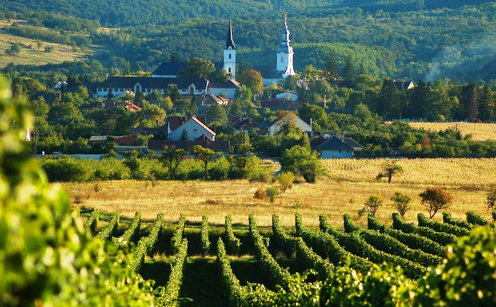
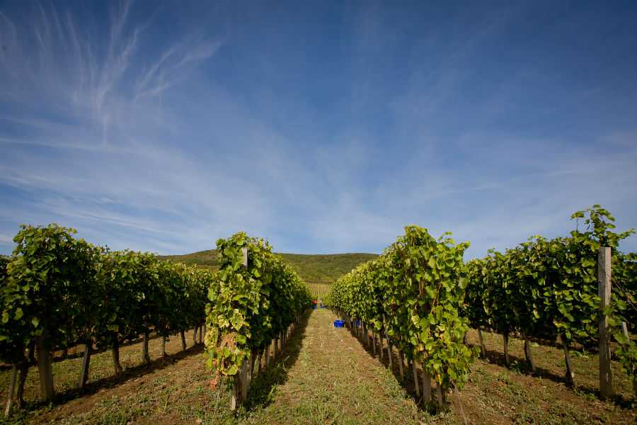
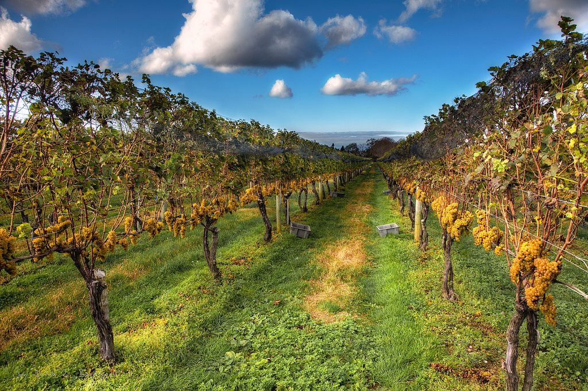
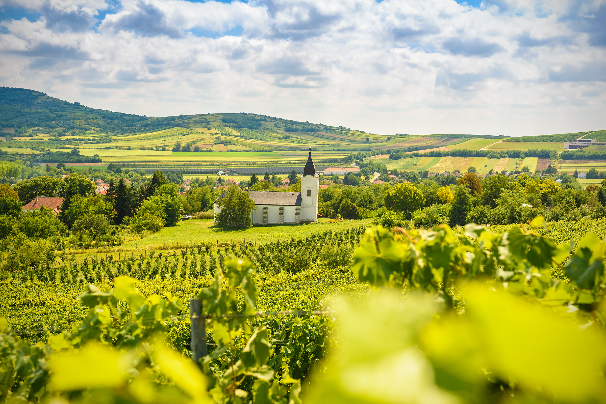
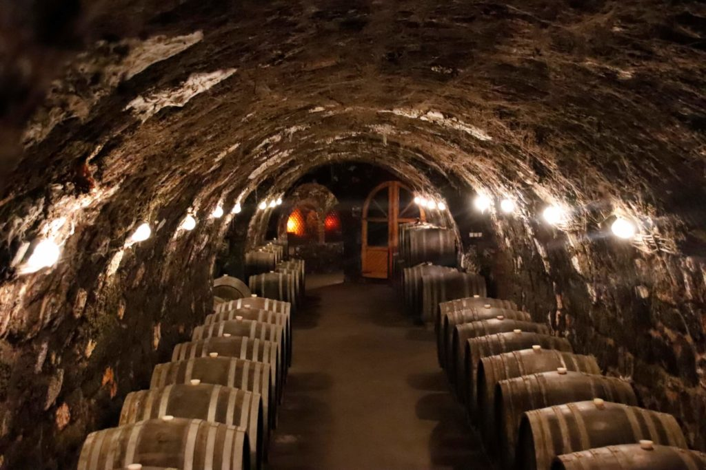
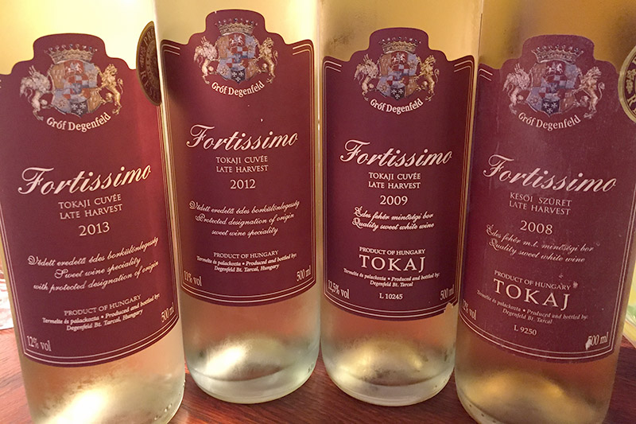

Tokaj észak-magyarországi város Borsod-Abaúj-Zemplén megyében, a Tisza és a Bodrog találkozásánál, a
Kopasz-hegy lábánál. A Tokaji járás központja.
A Tokaji borvidék névadó települése, amiben nemcsak a bortermelésben és -kereskedelemben játszott szerepe,
hanem stratégiai, közlekedési csomóponti fekvése is szerepet játszik.






 Charge and save
Charge and save